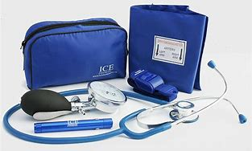
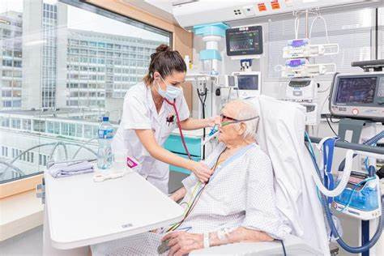
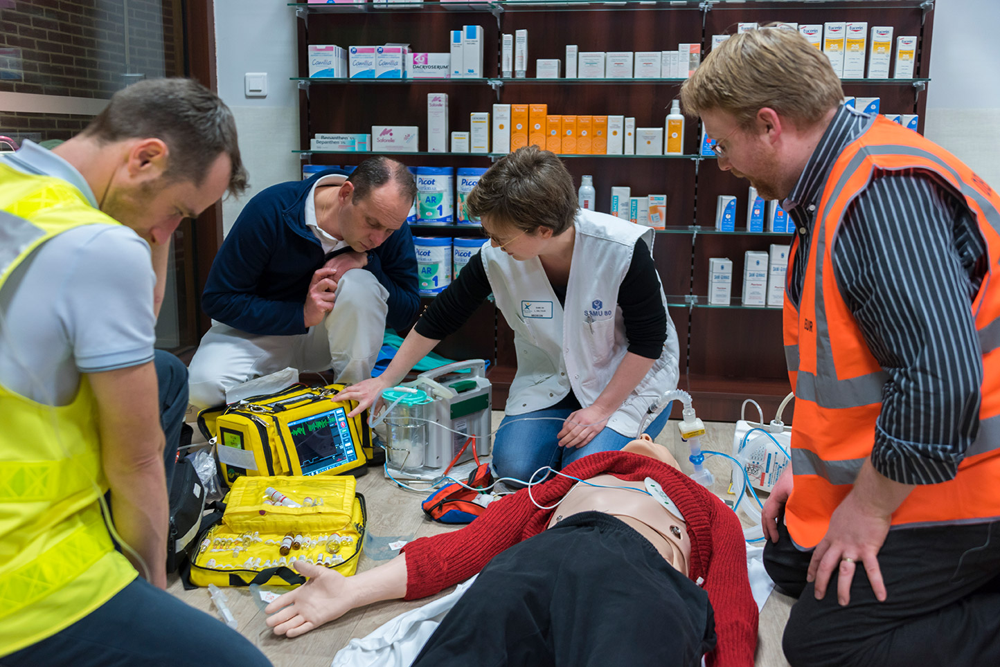

Notes de musiaque et intruments

Médecine/pharmacie|campus France
Médecin -Harmonie des Deux sources

Médecin spécialiste -URPS Médecins libéraux de Bretagne
Médecin joyeux à l'aide d'un Microscope
Bilan d'urgence vitale

Bleue Moniteur de pression sanguine sphygmomanomètre anéaroide
Outils médicaux du médecin, Stétoscope et seringue

Système de médecine d'urgence à distance

U-IMC de médecine interne générale

Urgence en pharmacie
Médicaments : Anxiolytiques